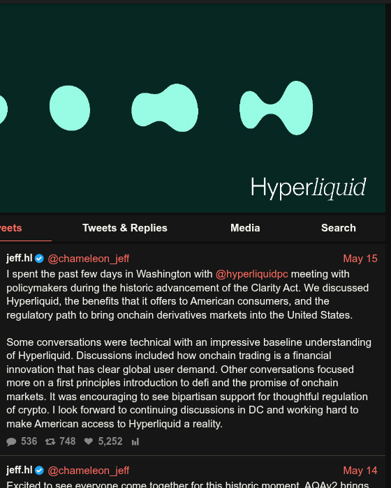

Tudo nasce de uma recusa.

Jeff Yan. Nascido em Palo Alto, filho de imigrantes chineses. Medalhista da Olimpíada Internacional de Física (prata em 2012, ouro em 2013). Formado em matemática e ciência da computação por Harvard em 2017. Foi trader quantitativo na Hudson River Trading, onde microssegundos valem milhões. Em 2018, teve um projeto incubado pela Binance Labs que deu errado, algo que CZ, o fundador da Binance, faria questão de relembrar anos depois. Em seguida fundou a Chameleon Trading, firma de market-making em Porto Rico, e foi com o lucro dela que bancou a Hyperliquid.
O time. Em 2022, Yan fundou a Hyperliquid Labs ao lado de um cofundador sob o pseudônimo iliensinc, colega de Harvard. Começou com 11 pessoas, recrutadas de Caltech, MIT, Citadel e da própria Hudson River. Engenheiros de elite, não profissionais de growth. Essa proporção, $13 bilhões de valor por um punhado de gente, viraria um dos ativos de marca mais memáveis do projeto.
A decisão que definiu tudo. No início de 2024, fundos de venture capital ofereceram aporte avaliando a Hyperliquid em US$ 1 bilhão. Yan recusou. A lógica não era financeira, era de posicionamento: aceitar dinheiro de VC significaria dar alocação a insiders, e isso contaminaria a neutralidade que o projeto precisava ter.